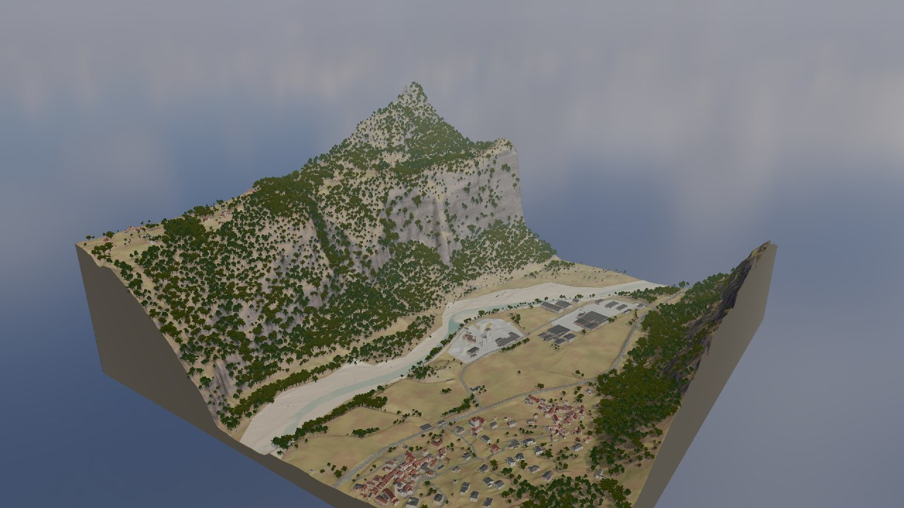

01 / VALE REAL
Um vale inteiro.
Em três dimensões.
Explore o conjunto, depois desça até a floresta, o rio e o povoado.

LABORATÓRIO ESPACIAL / 01
Do vale inteiro à escala de uma rua.
Escolha um ponto, aproxime-se e caminhe.
Cena detalhada: o carregamento pode consumir bastante internet e memória. Prefira Wi-Fi; computador recomendado.
01 / VALE REAL
Explore o conjunto, depois desça até a floresta, o rio e o povoado.
WASD ou setas · arraste para olhar · Esc para sair
O 3D não pôde ser exibido neste navegador. A imagem mostra a mesma demonstração: terreno público suíço com vegetação e acabamentos ilustrativos. Você pode tentar novamente em outro dispositivo.
Voltar à apresentação ↗